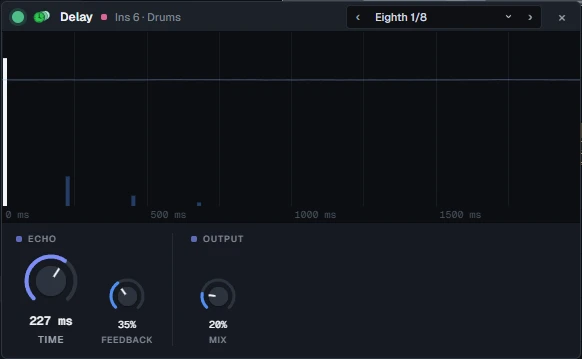
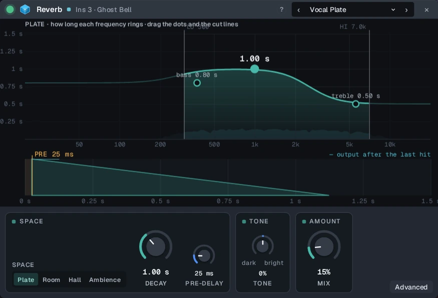
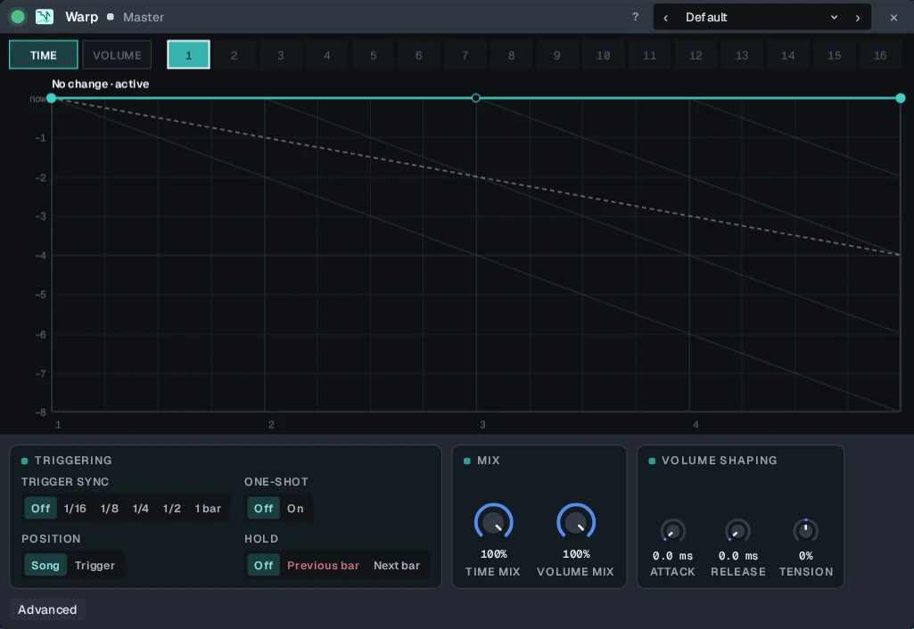

Delay
Delay repeats the sound. Time sets the spacing in beats or milliseconds. Feedback feeds each echo back into the next, so higher values keep the repeats going longer. Wet and Dry set the echo and original levels independently.
Try it on a rimshot pattern with gaps. Set Sync to Tempo, Time to ¾ beat (a dotted eighth), Feedback to 35%, and Wet to 25%. Switch Model to Ping-pong and listen to the repeats alternate left and right. Lower Cutoff with the low-pass filter active to hear each repeat get darker.
Listen for quieter repeats between and after the hits in this mono echo example.
Ducking tucks echoes under the source and lets them come up in the gaps. Open Advanced for loop filtering, distortion, lo-fi, diffusion, and modulation. Use Keep pitch to crossfade when you change the time, or Repitch for a tape-like pitch bend.


Reverb
Reverb surrounds a sound with reflections that blend into a tail. Space changes the character from the smooth Plate to the reflections of Room, the diffuse Hall, or the short Ambience.
Try Plate on a dry lead vocal with Decay around 1 second, Pre-delay at 25 ms, and Mix at 15%. Listen at the end of a line. Increase Decay to extend the tail, then compare zero and 25 ms of Pre-delay to hear how a gap before the tail keeps the start of the word distinct.
Tone changes how long the highs ring. In Advanced, Low cut and High cut trim what enters the reverb, Bass decay changes how long the lows ring, and Ducking lowers the reverb while the vocal is present.


Half-Speed
Half-Speed replays the start of each tempo-synced Loop window more slowly and resets on the next boundary. Choose 1.5× fifth, 2× octave, or 4× two oct. to set how far the pitch drops. The effect follows playback in both Pattern and Song mode.
Try 2× octave on a pluck arpeggio with Loop set to one bar. Listen for the lower notes and the restart on the next downbeat. Shorten the loop to reset more often. Move Smooth left to keep the grid-aligned attacks or right to blend and swell into each new window.
Band low and Band high limit which frequencies slow down. Switch to Band solo to hear that range in isolation, then return to Full and adjust Mix.
Warp
Warp uses two editable maps over a bar. The Time map changes where the effect reads from the recent audio. The top of the graph is the present, the bottom reaches eight beats back, and the slope controls playback speed. The Volume map changes gain to create gates and rhythmic swells.
Play a drum loop from a downbeat. In Time, choose slot 5, Stutter — beat 1 ×4. Listen for the opening beat repeated four times while the song continues. Lower Time mix to blend the original back in. Switch to Volume to edit or select a gain pattern, with its own Volume mix.
Right-click a slot to open its Library of maps. Trigger sync quantizes slot changes to a grid division. Set Position to Song to follow the bar or Trigger to start the map at the slot change. One-shot returns to slot 1 after one bar.


Chorus
Chorus thickens a sound with short, moving copies. Chorus blends in two voices per side, Ensemble uses three for a denser shimmer, and Vibrato uses one modulated voice for pitch wobble.
Hold a clean electric guitar chord. In Chorus mode, start at Rate 0.6 Hz, Depth 40%, and Mix 50%. Compare with bypass and listen for extra width as the chord rings. Switch to Vibrato and turn Mix up to hear the pitch motion clearly.
Rate sets how fast the voices move in Hz or tempo divisions, and Depth sets the size of the movement. Use Safe bass to keep more low end out of the moving copies, and Tone to soften their highs.
Phaser
A phaser moves dips through the frequency spectrum. Those dips form when the phase-shifted signal meets the dry sound, giving notes a hollow, sweeping quality.
Hold a chord on an electric piano. Set Stages to 4, Mix to 50%, and Rate around 0.4 Hz. Increase Depth and listen for a wider sweep through the chord. Try 8 stages to hear a more complex sweep, then increase Feedback to accent the resonant peaks.
Center places the sweep in the spectrum. Stereo offsets the sweep between the left and right sides, and the Tempo rate mode locks its cycle to the song.
Saturator
Saturation adds harmonics and rounds peaks as the input is driven harder. Style changes the character of the distortion, with Tape, Console, Transformer, Triode, and Pentode available.
Try Tape on a clean bass line. Raise Drive from 20% to 60% and listen for the notes to become more audible above the sub. Select Auto and trim Output to match the bypassed level, then compare another style. Blend back the original with Mix to keep the attack.
Low cut trims bass before it hits the distortion and High cut softens the resulting highs. Punish +20 adds 20 dB of drive for heavier distortion. 4× HQ in Advanced uses more oversampling to reduce aliasing.
Filter
A filter cuts parts of the spectrum around its Cutoff. LP trims highs, HP trims lows, BP keeps a band, and Notch cuts a band. Ladder is a resonant low-pass with a driveable character. In DJ mode, Position moves from low-pass through neutral to high-pass.
Loop a bright synth or a drum break. Set Type to LP, sweep Cutoff down from open, then add a little Resonance. Listen for the highs to recede and a peak to appear near the cutoff. Raise LFO depth for a repeating sweep, or use positive Env depth so louder hits open the filter.
Rate and Shape set the LFO cycle. Env attack and Env release set how quickly the level-driven sweep responds. Select a Sidechain source to make another Mixer insert drive the envelope.
Stereo
Width changes the difference between the left and right signals. With Spread at zero, 0% sums to mono, 100% keeps the original width, and higher settings emphasize the sides. Spread can add width to a mono signal by creating side information that cancels when summed to mono.
Try a mono guitar take. Raise Width with Spread at zero, then raise Spread and listen for the guitar to spread out. Bring Spread back to 0% before setting Width to 0% for a mono check.
In Bass, choose Mono and set Mono below to center just the low end on stereo material. Use Gain and Pan for level and balance. Advanced includes polarity and left/right swap controls.
Pitch Correct
Pitch Correct detects a single sung melody and moves it toward notes allowed by Key and Scale. Set these from the song or use Detect key… to analyze the backing. Set Voice if you want to narrow the pitch detection range.
Loop a dry solo vocal over its chords. Compare Retune at 40 ms and 0 ms. Listen for the softer approaches to notes at the slower setting and the stepped jumps at the fastest setting. If a note pulls to the wrong place, check the detected scale and the intended melody.
Humanize eases the correction on held notes. Flex narrows the range around a target before correction engages, and Vibrato preserves more of the natural wobble. Transpose shifts the melody, and Formant changes its resonant character.
To correct individual notes in a recorded clip, open its menu and choose Edit pitch….
Voice
Voice reshapes a solo vocal. Transpose shifts the melody by Pitch, Quantize snaps to the nearest semitone before shifting, and Robot holds the pitched sound on a fixed note (C4 at zero).
Loop a sung phrase in Transpose mode. Leave Pitch at zero and move Formant from −3 to +3 semitones. Listen for the vowel color to get deeper or brighter while the melody stays in place. Raise Pitch and try Link to hear the formants follow the shift.
Drive adds saturation after the shift. Set Output to match the original when comparing.
Denoiser
Denoiser learns a noise profile across frequencies and reduces sounds close to that profile, such as steady fan noise, hiss, or hum. Adaptive keeps updating the profile and Hold freezes it.
Play a vocal take starting with a second of room tone. Start with Reduction at 6 dB and Profile on Adaptive. Switch Listen to Noise to hear what is removed. If you hear clear words or consonants in that signal, lower Sensitivity or Reduction. Return Listen to Off to hear the cleaned take.
Raise Smoothing if the residual noise sounds watery or sparkly. Compare in bypass during the words and in the gaps to find the lightest useful setting.